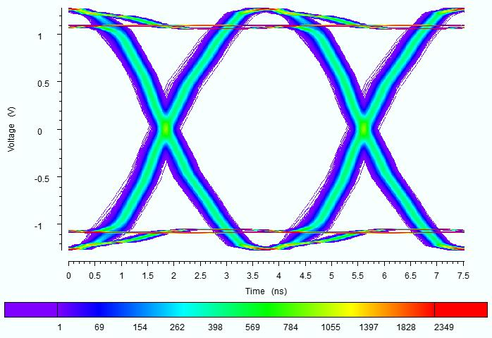
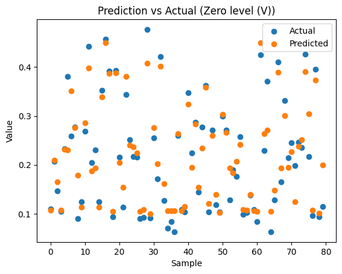

AI-Based SI/PI/EMC-Compliant PCB Design
Using regression and CNN models to predict and classify signal integrity in high-speed PCB circuits.
The goal. Signal integrity (SI) problems — reflection, crosstalk, dispersion — force PCB designers through multiple costly redesign cycles. This project, done with a team at TU Dortmund's Information Processing Lab, applies machine learning to predict and classify SI performance for single-ended and differential PCB signal pairs, cutting down on simulation-heavy design cycles.
The data. Using Zuken's eCADSTAR simulation software, we generated eye-diagram and transient-response datasets by sweeping transmission-line length, impedance, and resistance across hundreds of simulated configurations for both single-ended and differential topologies.
The models. An ANN regression model predicts transient-response and eye-diagram measurements (zero level, amplitude, rise/fall time, and more) directly from circuit parameters. A separate CNN classifies eye-diagram images as passing or failing predefined height and width thresholds. Both were deployed through a Streamlit dashboard for interactive use.
My focus. I worked on the regression model for transient-response prediction and the binary CNN classifier for eye-diagram pass/fail classification.

